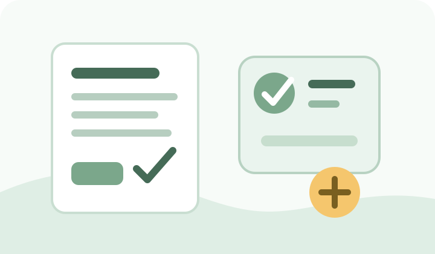

Phone Repair
운정 휴대폰 수리는 부품 재고와 데이터 준비를 먼저 확인하면 대기와 재방문을 줄일 수 있습니다.
액정 파손, 배터리 성능 저하, 충전 불량, 침수처럼 증상에 따라 필요한 점검과 수리시간이 다릅니다. 제조사 공식센터를 이용할지 사설 수리점을 이용할지도 보증 상태와 데이터 중요도에 따라 달라집니다.

삼성 운정휴대폰센터 기본 정보
| 위치 | 경기 파주시 경의로 989, 삼성스토어 운정 1층 |
| 평일 | 09:00~19:00 |
| 토요일 | 09:00~13:00 |
| 일요일·공휴일 | 휴무 |
| 가능 제품 | 스마트폰·태블릿·웨어러블 |
| 주차 | 에스비프라자 옥외 주차장 이용, 세부조건은 센터 확인 |
센터는 방문객 증가나 접수 물량에 따라 조기 마감되거나 당일 수리가 어려울 수 있다고 안내합니다. 운영 종료 최소 1시간 전보다 여유 있게 방문하는 편이 좋습니다.
증상별로 준비할 것
- 액정 파손: 터치 가능 여부와 화면 표시 상태를 확인하고 가능하면 백업합니다.
- 배터리: 급격한 방전, 발열, 팽창 여부를 설명합니다.
- 충전 불량: 다른 케이블·충전기에서도 같은 증상인지 확인합니다.
- 침수: 전원을 반복해서 켜거나 충전하지 말고 가능한 빨리 점검을 받습니다.
방문 전 체크
모델명과 색상, 파손 부위, 보증 여부를 미리 확인하고 센터에 필요한 부품 재고와 예상 수리시간을 문의하세요. 공식센터가 아닌 곳을 이용한다면 사용 부품의 종류, 수리 후 보증 범위, 방수 성능 변화 가능성을 먼저 확인하는 편이 좋습니다.
개인정보와 데이터도 수리 항목만큼 중요합니다
가능하다면 사진·연락처·인증앱 등 중요한 데이터를 백업하고, 수리업체가 요구하지 않는 계정 비밀번호는 공유하지 않는 편이 좋습니다. 기기 자체의 수리용 보호 기능을 사용할 수 있다면 해당 기능의 공식 안내를 확인하세요.